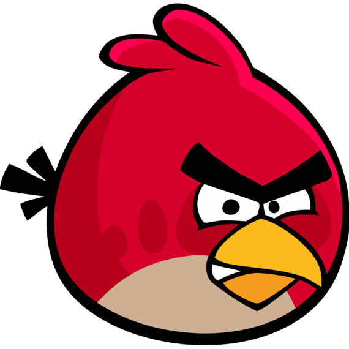

Blog Post Title
Author: John Doe
Date: May 29, 2023
Introduction
In the world of mobile gaming, few characters have captured the hearts of players quite like the iconic Red Bird from Angry Birds. As the leader of the flock, this feisty feathered hero has become synonymous with the wildly popular game franchise. In this article, we delve into the origins, abilities, and enduring appeal of the one and only Red Bird.
Unveiling the Avian Hero
Introduced in the original Angry Birds game, Red Bird quickly became the face of the franchise, captivating players with his vibrant red plumage and determined expression. Serving as the game's main protagonist, Red Bird is a small but mighty force to be reckoned with. He possesses a unique set of skills that make him an invaluable asset in the ongoing battle against the villainous green pigs.
The Power of Simplicity
What sets Red Bird apart is his straightforward approach to destruction. Unlike his feathered friends with special abilities, Red Bird relies solely on speed and impact to bring down structures and topple the piggy fortresses. With a simple tap on the screen, players launch Red Bird from a slingshot, using physics and strategy to maximize his damage potential. This straightforward gameplay mechanic has resonated with millions of players worldwide, making Red Bird an instantly recognizable symbol of Angry Birds.
Conclusion
Red Bird's fiery determination and simplistic gameplay have made him an unforgettable gaming character. From launching himself into the sky to demolishing piggy fortresses, Red Bird has become a beloved symbol of the Angry Birds franchise. Whether you're a seasoned gamer or a casual player, embracing the power of Red Bird is sure to bring hours of entertainment and avian fury.